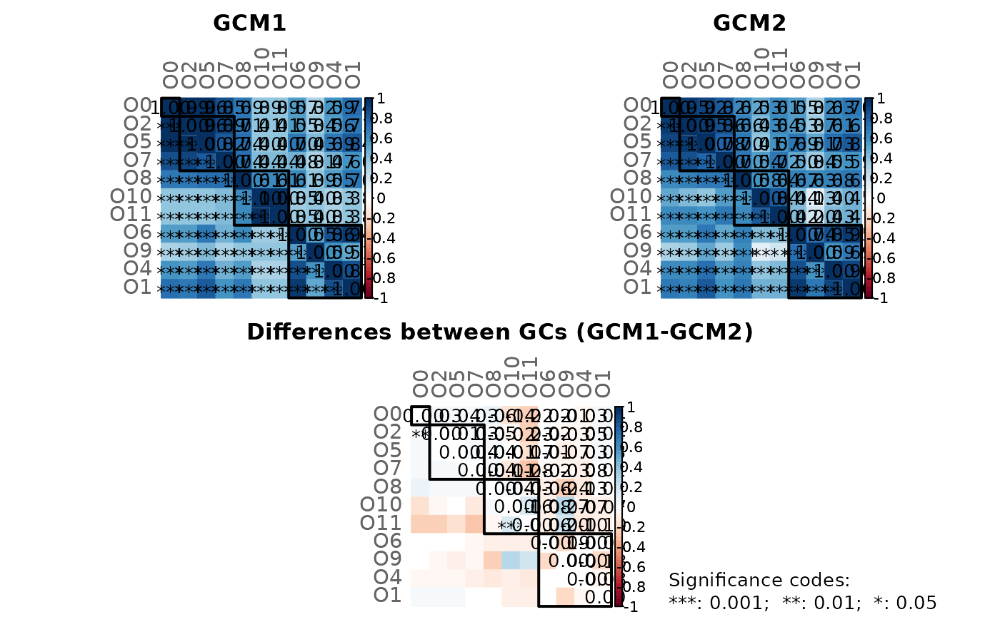

This tutorial shows how to construct a cross-domain network (e.g. a network consisting of bacteria and fungi) using SpiecEasi’s ability to estimate cross-domain associations.
We use the same data as in the “Cross domain interactions” section of the SpiecEasi tutorial.
The samples are split into two groups and cross-domain associations are computed for each group using SpiecEasi. The association matrices are then passed to NetCoMi’s netConstruct() function to conduct a network comparison between the two groups.
Note:
This tutorial explains how two cross-domain networks are constructed and
compared. For constructing a single network, skip the
step where the data are split into two groups and perform the framework
only for a single data set (i.e. pass the estimated association matrix
to the “data” argument of netConstruct() and continue with NetCoMi’s
standard pipeline).
library(SpiecEasi)
library(phyloseq)
data(hmp2)
# Store count matrices (taxa are columns)
counts_hmp216S <- as.matrix(t(phyloseq::otu_table(hmp216S)@.Data))
counts_hmp2prot <- as.matrix(t(phyloseq::otu_table(hmp2prot)@.Data))
# Assume, the first 23 samples are in one group and the remaining 24 samples in the other group
group_vec <- c(rep(1, 23), rep(2, 24))
# Split count matrices
counts_hmp216S_gr1 <- counts_hmp216S[group_vec == 1, ]
counts_hmp216S_gr2 <- counts_hmp216S[group_vec == 2, ]
counts_hmp2prot_gr1 <- counts_hmp2prot[group_vec == 1, ]
counts_hmp2prot_gr2 <- counts_hmp2prot[group_vec == 2, ]
set.seed(123456)
# Run SpiecEasi and create association matrix for group 1
# Note: Increase nlambda and rep.num for real data sets
spiec_result_gr1 <- multi.spiec.easi(list(counts_hmp216S_gr1,
counts_hmp2prot_gr1),
method='mb',
nlambda=10,
lambda.min.ratio=1e-2,
pulsar.params = list(thresh = 0.05,
rep.num = 10))
#> Warning in spiec.easi.list(datalist, method = method, sel.criterion =
#> sel.criterion, : input list contains data of mixed classes.
#> Applying data transformations...
#> Selecting model with pulsar using stars...
#> Fitting final estimate with mb...
#> done
assoMat1 <- SpiecEasi::symBeta(SpiecEasi::getOptBeta(spiec_result_gr1), mode = "ave")
assoMat1 <- as.matrix(assoMat1)
# Run SpiecEasi and create association matrix for group 2
# Note: Increase nlambda and rep.num for real data sets
spiec_result_gr2 <- multi.spiec.easi(list(counts_hmp216S_gr2,
counts_hmp2prot_gr2),
method='mb',
nlambda=10,
lambda.min.ratio=1e-2,
pulsar.params = list(thresh = 0.05,
rep.num = 10))
#> Warning in spiec.easi.list(datalist, method = method, sel.criterion =
#> sel.criterion, : input list contains data of mixed classes.
#> Applying data transformations...
#> Selecting model with pulsar using stars...
#> Fitting final estimate with mb...
#> done
assoMat2 <- SpiecEasi::symBeta(SpiecEasi::getOptBeta(spiec_result_gr2), mode = "ave")
assoMat2 <- as.matrix(assoMat2)
# Get taxa names
taxnames <- c(taxa_names(hmp216S), taxa_names(hmp2prot))
colnames(assoMat1) <- rownames(assoMat1) <- taxnames
diag(assoMat1) <- 1
colnames(assoMat2) <- rownames(assoMat2) <- taxnames
diag(assoMat2) <- 1
# NetCoMi workflow
library(NetCoMi)
# Network construction (pass association matrices to netConstruct)
# - sparsMethod must be set to "none" because sparsification is already included in SpiecEasi
net_hmp_16S_prot <- netConstruct(data = assoMat1, data2 = assoMat2,
dataType = "condDependence",
sparsMethod = "none")
#> Checking input arguments ... Done.
# Network analysis
netprops_hmp_16S_prot <- netAnalyze(net_hmp_16S_prot, hubPar = "eigenvector")
#> Warning: The `scale` argument of `eigen_centrality()` always as if TRUE as of igraph
#> 2.1.1.
#> ℹ Normalization is always performed
#> ℹ The deprecated feature was likely used in the NetCoMi package.
#> Please report the issue at <https://github.com/stefpeschel/NetCoMi/issues>.
#> This warning is displayed once every 8 hours.
#> Call `lifecycle::last_lifecycle_warnings()` to see where this warning was
#> generated.
nodeCols <- c(rep("lightblue", ntaxa(hmp216S)), rep("orange", ntaxa(hmp2prot)))
names(nodeCols) <- taxnames
plot(netprops_hmp_16S_prot,
sameLayout = TRUE,
layoutGroup = "union",
nodeColor = "colorVec",
colorVec = nodeCols,
nodeSize = "eigen",
nodeSizeSpread = 2,
labelScale = FALSE,
cexNodes = 2,
cexLabels = 2,
cexHubLabels = 2.5,
cexTitle = 3.8,
groupNames = c("group1", "group2"))
legend(-0.2, 1.2, cex = 3, pt.cex = 4,
legend = c("HMP2 16S", "HMP2 protein"), col = c("lightblue", "orange"),
bty = "n", pch = 16)
# Network comparison
# - Permutation tests cannot be performed because the association matrices are
# used for network construction. For permutation tests, however, the count
# data are needed.
netcomp_hmp_16S_prot <- netCompare(netprops_hmp_16S_prot, permTest = FALSE)
#> Checking input arguments ... Done.
summary(netcomp_hmp_16S_prot, groupNames = c("group1", "group2"))#>
#> Comparison of Network Properties
#> ----------------------------------
#> CALL:
#> netCompare(x = netprops_hmp_16S_prot, permTest = FALSE)
#>
#> ______________________________
#> Global network properties
#> `````````````````````````
#> Largest connected component (LCC):
#> group1 group2 difference
#> Relative LCC size 0.716 0.693 0.023
#> Clustering coefficient 0.028 0.106 0.078
#> Modularity 0.660 0.645 0.015
#> Positive edge percentage 65.333 57.333 8.000
#> Edge density 0.038 0.041 0.003
#> Natural connectivity 0.019 0.020 0.001
#> Vertex connectivity 1.000 1.000 0.000
#> Edge connectivity 1.000 1.000 0.000
#> Average dissimilarity* 0.988 0.988 0.000
#> Average path length** 3.813 3.912 0.099
#>
#> Whole network:
#> group1 group2 difference
#> Number of components 17.000 18.000 1.000
#> Clustering coefficient 0.027 0.095 0.068
#> Modularity 0.707 0.695 0.012
#> Positive edge percentage 65.476 60.465 5.011
#> Edge density 0.022 0.022 0.001
#> Natural connectivity 0.013 0.013 0.000
#> -----
#> *: Dissimilarity = 1 - edge weight
#> **: Path length = Units with average dissimilarity
#>
#> ______________________________
#> Jaccard index (similarity betw. sets of most central nodes)
#> ```````````````````````````````````````````````````````````
#> Jacc P(<=Jacc) P(>=Jacc)
#> degree 0.172 0.045131 * 0.983900
#> betweenness centr. 0.265 0.256412 0.849120
#> closeness centr. 0.257 0.221235 0.873473
#> eigenvec. centr. 0.189 0.041409 * 0.983142
#> hub taxa 0.000 0.017342 * 1.000000
#> -----
#> Jaccard index in [0,1] (1 indicates perfect agreement)
#>
#> ______________________________
#> Adjusted Rand index (similarity betw. clusterings)
#> ``````````````````````````````````````````````````
#> wholeNet LCC
#> ARI 0.043 0.014
#> p-value 0.015 0.462
#> -----
#> ARI in [-1,1] with ARI=1: perfect agreement betw. clusterings
#> ARI=0: expected for two random clusterings
#> p-value: permutation test (n=1000) with null hypothesis ARI=0
#>
#> ______________________________
#> Graphlet Correlation Distance
#> `````````````````````````````
#> wholeNet LCC
#> GCD 0.685 0.784
#> -----
#> GCD >= 0 (GCD=0 indicates perfect agreement between GCMs)
#>
#> ______________________________
#> Centrality measures
#> - In decreasing order
#> - Centrality of disconnected components is zero
#> ````````````````````````````````````````````````
#> Degree (normalized):
#> group1 group2 abs.diff.
#> 6.3.5.5 0.011 0.080 0.069
#> 6.3.2.6 0.011 0.069 0.057
#> 1.2.1.12 0.057 0.000 0.057
#> 5.1.3.3 0.080 0.023 0.057
#> Unc054vi 0.011 0.057 0.046
#> Unc01c0q 0.000 0.046 0.046
#> K00626 0.046 0.000 0.046
#> K03043 0.069 0.023 0.046
#> UncO8895 0.000 0.034 0.034
#> Unc00y95 0.011 0.046 0.034
#>
#> Betweenness centrality (normalized):
#> group1 group2 abs.diff.
#> 5.1.3.3 0.499 0.029 0.470
#> 1.2.1.12 0.352 0.000 0.352
#> 2.7.7.6 0.132 0.479 0.347
#> Unc01c0q 0.000 0.338 0.338
#> 6.3.5.5 0.000 0.324 0.324
#> 6.3.2.6 0.000 0.297 0.297
#> 2.3.1.29 0.000 0.259 0.259
#> K15633 0.000 0.210 0.210
#> 3.6.3.14 0.360 0.162 0.197
#> K10117 0.178 0.000 0.178
#>
#> Closeness centrality (normalized):
#> group1 group2 abs.diff.
#> 1.2.1.12 0.491 0.000 0.491
#> UncO8895 0.000 0.466 0.466
#> Unc01c0q 0.000 0.460 0.460
#> 1.1.1.58 0.000 0.455 0.455
#> 2.7.2.1 0.000 0.420 0.420
#> 6.3.4.4 0.000 0.415 0.415
#> 2.2.1.1 0.000 0.402 0.402
#> K02935 0.392 0.000 0.392
#> 4.1.1.49 0.000 0.380 0.380
#> 2.6.1.52 0.377 0.000 0.377
#>
#> Eigenvector centrality (normalized):
#> group1 group2 abs.diff.
#> 5.1.3.3 1.000 0.025 0.975
#> 5.3.1.12 0.911 0.048 0.863
#> 6.3.5.5 0.040 0.840 0.800
#> 1.2.1.12 0.786 0.000 0.786
#> K03043 0.730 0.000 0.730
#> Unc054vi 0.002 0.627 0.625
#> K02992 0.616 0.023 0.593
#> 2.7.7.6 0.431 1.000 0.569
#> K01812 0.689 0.140 0.549
#> 6.3.2.6 0.114 0.592 0.478
#>
#> _________________________________________________________
#> Significance codes: ***: 0.001, **: 0.01, *: 0.05, .: 0.1